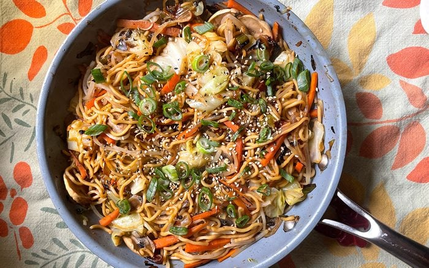

Yakisoba Noodles

An ancient pasta meal, full of vegetables, meat, and liquid salt
You might not know but this recipe were made by the shaolim monk's in ancient asia. Don't belive me? yeah you're probably right... Dosen't matter go for it!
Ingredients
- 300g of soba pasta
- 1 tablespoon of soya oil
- Half of a small cauliflower
- 6 tablespoon of shoyu sauce
- 100g of the best mushroom you find
- 4 chard leaves cut diagonally
- An large onion chopped in medium peaces
- Half of a small tree (broccoli)
- 250ml of yakisoba sauce
- 400g of 1st quality meat chopped into tiny strips
- 1 beautiful carrot but diagonally
40 minutes to make your tongue meet buda baby!
Directions
- Boil the pasta in salted water then let it rest.
- In a large pan, add oil and sauté the onion.
- Add meat, broccoli, cauliflower, carrots, chard, mushrooms and season with soy sauce.
- Drop the yakisoba sause and let it cook until the vegetables be al dente.
- Add the pasta, mix it well and voilá, ready to serve!
Return to top
Return to main page